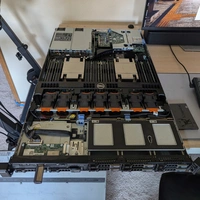

about me

I'm wink, also known as winksplorer. I work in software development and graphic design, and lately I’ve been getting into photography.
Lightning round: I use Debian Sid, my favorite movie is Memento, and my favorite languages are Go and C.